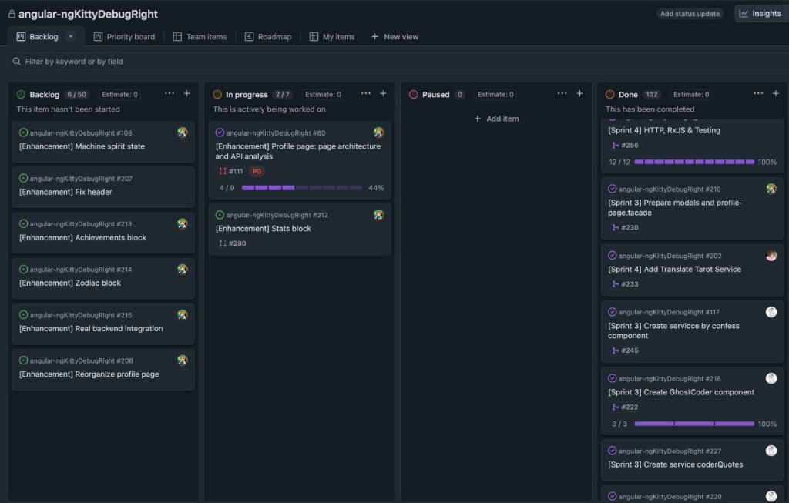
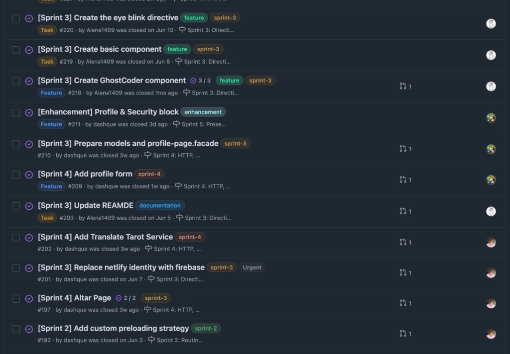

⛪
RS School · Angular 2026 Q2 · Team Presentation
The Church of the Holy Deploy
delulu-church — цифровой храм для программистов
delulu-church — цифровой храм для программистов
Intro
TeamPart 1 · Product Demo
ProductКак работали, учили Angular и принимали решения
Part 2 · Team Story
RolesPart 2 · Team Story
Project Board

Backlog → In progress → Paused → Done · 132 задачи закрыто · sprint labels · sub-issues
Архитектура и технические решения — для вопросов жюри
Q&A Backup
ArchitecturePart 3 · Q&A
Q&A · 5–10 minВопросы?
ngKittyDebug · RS School Angular 2026 Q2